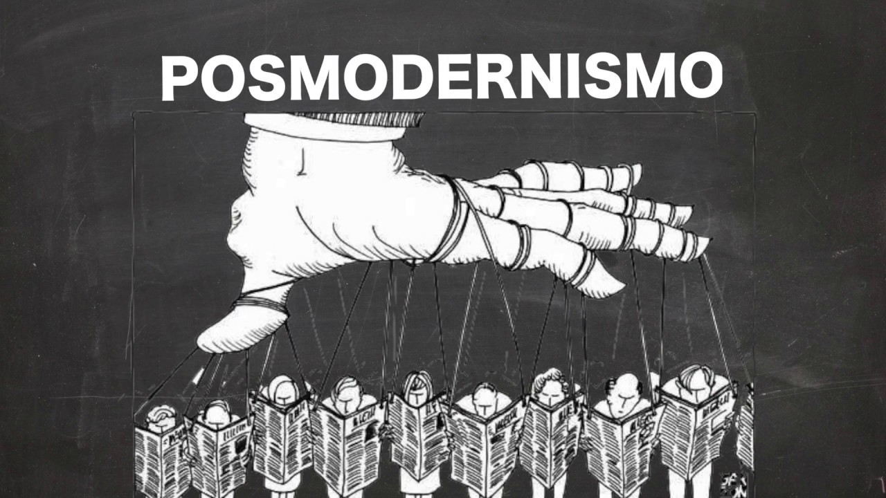

Símbolismo posmodernismo
El simbolismo en el posmodernismo es un tema fascinante que refleja la complejidad y la diversidad de esta corriente cultural y filosófica. El posmodernismo se caracteriza por su escepticismo hacia las narrativas universales y su énfasis en la fragmentación, la pluralidad y la ambigüedad. Dentro de este contexto, el simbolismo en el posmodernismo adopta formas innovadoras y desafiantes, jugando con las expectativas del espectador y cuestionando las convenciones establecidas. Aquí se explora cómo el simbolismo opera en el posmodernismo, sus características distintivas y algunos ejemplos destacados.
Características del Simbolismo en el Posmodernismo
1. Ironía y Parodia: Los símbolos en el posmodernismo a menudo se utilizan de manera irónica o paródica, cuestionando y subvirtiendo significados tradicionales. Esto refleja el escepticismo posmoderno hacia las verdades absolutas y las narrativas maestras.
2. Intertextualidad: Los símbolos posmodernos suelen referenciar otros textos, medios y contextos culturales, creando una red de significados interconectados. Este enfoque enfatiza la naturaleza construida y relacional del significado.
3. Fragmentación: En lugar de buscar una coherencia unificada, el simbolismo posmoderno abraza la fragmentación y la multiplicidad de interpretaciones. Los símbolos pueden tener múltiples significados que coexisten y se superponen, reflejando la complejidad de la experiencia humana.
4. Juegos de Significado: El posmodernismo a menudo juega con el significado de los símbolos, desestabilizando las asociaciones tradicionales y creando nuevas conexiones inesperadas. Esto puede involucrar la mezcla de alta cultura y cultura popular, el uso de simulacros y la exploración de la hiperrealidad.
Implicaciones del Simbolismo Posmoderno
1.Desafío a la Autoridad: Al utilizar símbolos de manera irónica y fragmentada, el posmodernismo desafía las formas tradicionales de autoridad y conocimiento. Esto fomenta una actitud crítica hacia las estructuras de poder y las narrativas dominantes.
2.Celebración de la Diversidad: El simbolismo posmoderno celebra la diversidad y la pluralidad de significados, reflejando una visión del mundo que valora las diferencias y la complejidad de la experiencia humana.
3.Relativismo Cultural: Al desestabilizar los significados tradicionales, el posmodernismo también puede conducir a un relativismo cultural, donde ninguna interpretación se considera definitiva o superior a otra. Esto puede abrir espacios para nuevas formas de expresión y entendimiento cultural.
4.Exploración de la Identidad: Los símbolos posmodernos a menudo exploran cuestiones de identidad, género, raza y cultura, reflejando las preocupaciones contemporáneas sobre la construcción y la representación de la identidad en un mundo globalizado y mediado por la tecnología.
Representación

Video
Bibliografía
- Baudrillard, J. (1981). Simulacra and Simulation. University of Michigan Press.